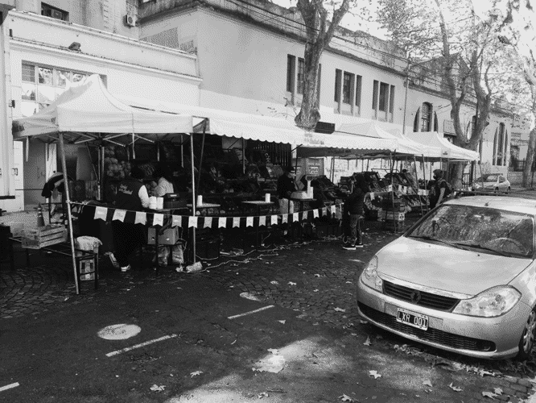
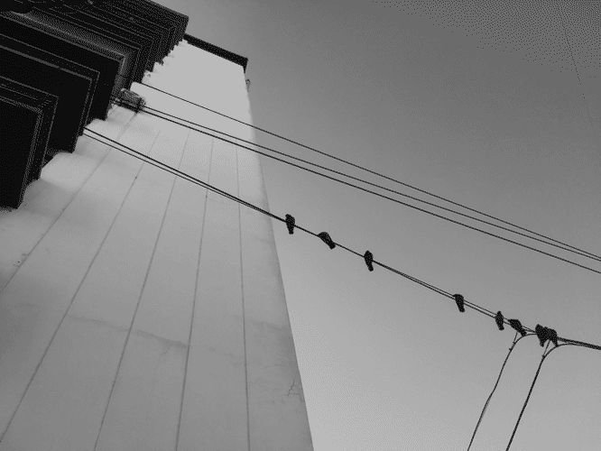
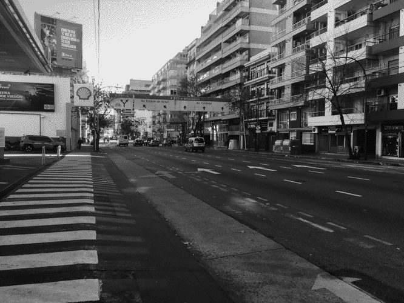

computing : games & art : research
sitemap
|
|
home
computing : games & art : research sitemap |
I had been looking forward to this day for almost a week. There's a farmers' market that gathers a few blocks from home every Tuesday and I was very excited to visit them. The experience was, unfortunately, somewhat lackluster.
The place was well stocked, but there were very few stalls. I had been to markets like this in the past, and those had more booths. This time, that wasn't the case. Maybe because of the pandemic and the lockdown.
— M93R95 (b&w version) (quantized 16C) - view original (3221 KiB, JPG)
One man got mad at me for taking pictures of the place. I realize I should've asked before taking any, but my mind was somewhere else. It's not that I was shooting pictures of him either. In any case, that didn't give the market any extra points.
My original idea was to go there and buy groceries for the whole week. My usual shops stock the same stuff they sell, however, and I'd rather continue supporting them, so I don't believe my shopping habits will change a bit. Which is a little disappointing because I was looking for something new.
— J75U74 (b&w version) (quantized 16C) - view original (2888 KiB, JPG)
The leek I started growing some days ago has grown a lot! We were quite surprised at this. I don't know the first thing about plants, so I was expecting it to grow at a much slower pace. Nature is amazing.
I also put on, for the first time, a pair of socks I'd bought in Australia about two years ago. They are decorated with jelly beans. I love colorful socks. When I moved by myself, I left the plain-colored pairs behind, so now my feet are always clad in pretty patterns.
— P68I55 (b&w version) (quantized 16C) - view original (2110 KiB, JPG)
On the way home I saw a flock of pidgeons sitting on a phone line. Their picture ended up looking like a lost Windows 7 wallpaper. You can click view original to open the picture in full colour and see what I mean.
I then went to visit my parents. We had lunch together (sitting at tables set 3 meters apart and wearing face-masks when not eating). This time, I had new things to tell them! Amazing, just what I was hoping for.
After that, we spent time together and had some cups of coffee. I went back home at around eight in the evening. The block across the street was bursting with policemen and police cars. I don't know what was going on, and I didn't really feel like asking. But I'm very intrigued nonetheless.
— G83Q60 (b&w version) (quantized 16C) - view original (3069 KiB, JPG)
We held a Zoom meeting with Tejo to discuss the coming development sprints for Eterspire Beta II. That's tasks for the next eight weeks. Done that, the game should be finished and -if not already released-, ready to ship.
When we hang up, I had a nap, ate dinner and rewrote the whole script I use to compile the Lartunet. It's much more scalable and maintainable now. It also supports RSS, so you can get my ramblings and updates directly into your favourite reader. I'm using NetNewsWire and I like it very much. It's free and open-source, but it only works on iDevices.
— J77A10 (b&w version) (quantized 16C) - view original (3109 KiB, JPG)